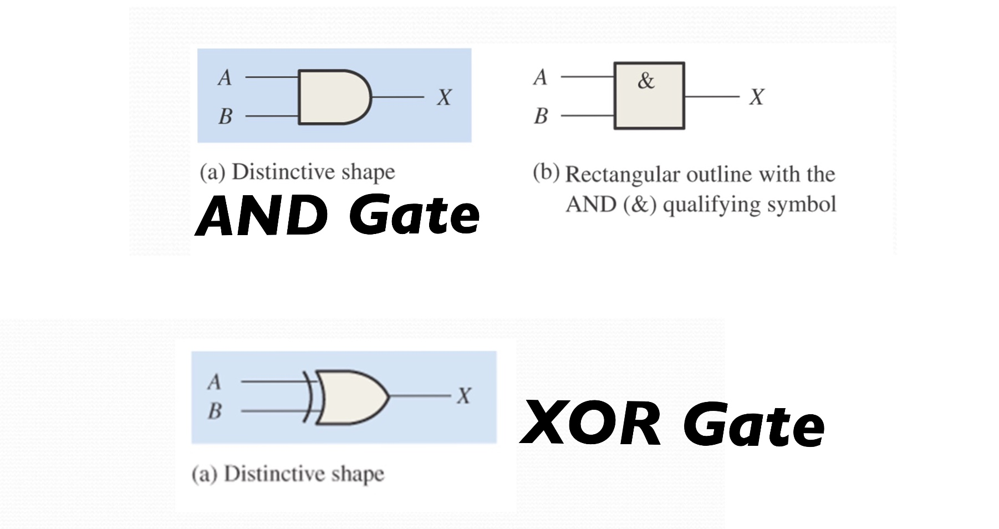
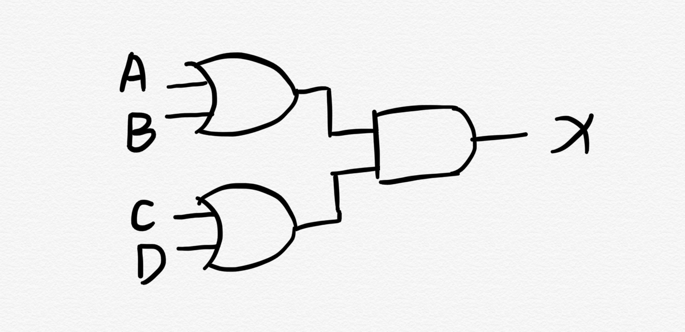

1) AND Gate 与门
解释
与门有n个输入,1个输出,当且仅当所有输入为1时输出为1,否则输出为0.
Representation
设 A,B 为输入, X 为输出
-
Truth Table
A B X 0 0 0 0 1 0 1 0 0 1 1 1 -
Boolean Expression
X = A + B
-
Logic Diagram Symbol (Image Below)
2) XOR Gate 异或门
解释
与门有2个输入,1个输出,当且仅当所有输入相同时输出为0,否则输出为1.
Representation
设 A,B 为输入, X 为输出
-
Truth Table
A B X 0 0 0 0 1 1 1 0 1 1 1 0 -
Boolean Expression
令A’表示A的非,B’表示B的非
X = A ⊕ B = A B’ + A’ B
-
Logic Diagram Symbol (Image Below)

3) Draw a circuit diagram about X=(A+B)(C+D)

4) Show the behavior of the following circuit with a truth table

设输出为X,令A’表示A的非，有 X = (A’) ⊕ (AB),真值表如下:
| A | B | X |
|---|---|---|
| 0 | 0 | 1 |
| 0 | 1 | 1 |
| 1 | 0 | 0 |
| 1 | 1 | 1 |
5) What is circuit equivalence? Use truth table to prove the following formula.
(AB)’ = A’ + B’ 等价
|A|B| AB | (AB)' | A' | B' | A'+B' | (AB)'=A'+B' |
|:--:| :--: | :--: | :--: | :--: | :--: | :--: | :--: |
|0|0|0| 1 | 1 | 1 | 1 | 1 |
|0|1|0| 1 | 1 | 0 | 1 | 1 |
|1|0|0| 1 | 0 | 1 | 1 | 1 |
|1|1|1| 0 | 0 | 0 | 0 | 1 |
从真值表可以看出(AB)‘=A'+B’为永真式,所以(AB)‘和A'+B’等价。
6) Combine 8 Full Adders to 8bit adder circuit

7) Fill the follow expression
令X’表示X的非:
(1) (X8X7X6X5X4X3X2X1)2 or (00001111)2 = ((X8X7X6X51111)2
(2) (X8X7X6X5X4X3X2X1)2 xor (00001111)2 = (X8X7X6X5X4'X3'X2'X1’)2
(3) ((X8X7X6X5X4X3X2X1)2 and (11110000)2) or (not (X8X7X6X5X4X3X2X1)2 and (00001111)2) = (X8X7X6X5X4'X3'X2'X1’)2
关键词解释 from Wikipedia
Logic Gate
In electronics, a logic gate is an idealized or physical device implementing a Boolean function; that is, it performs a logical operation on one or more binary inputs and produces a single binary output.
Boolean Algebra
In mathematics and mathematical logic, Boolean algebra is the branch of algebra in which the values of the variables are the truth values true and false, usually denoted 1 and 0 respectively. the main operations of Boolean algebra are the conjunction and denoted as ∧, the disjunction or denoted as ∨, and the negation not denoted as ¬.
Flip-Flops
(1). 中文翻译：(双稳态)触发器
(2). Q: How many bits information does a SR latch store? A: 1 Bit.
Last modified on 2020-09-30